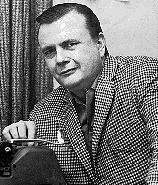

Gene L. Coon |
|
||
|  |
Gene Coon ha ideato i Klingon
e la Prima Direttiva. Coon ha
collaborato con Gene Roddenberry nel film
The Questor Tapes. Dei suoi due fratelli, Skip è stato produttore di
programmi per bambini agli Universal Studios, mentre Jack Jr. è un brillante saxofonista. Deceduto l'8 luglio 1973.
| Arena, A Taste of Armageddon, Space Seed | Teleplay |
| The Devil in the Dark, Errand of Mercy, Metamorphosis, Bread and Circuses, A piece of the Action, Spectre of the Gun (come Lee Cronin), Spock's Brain (come Lee Cronin), Wink of an Eye (come Lee Cronin), Let That Be Your Last Battlefield (come Lee Cronin) | Storia |